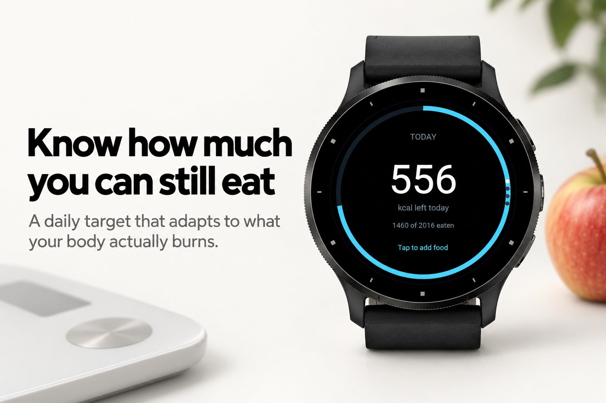
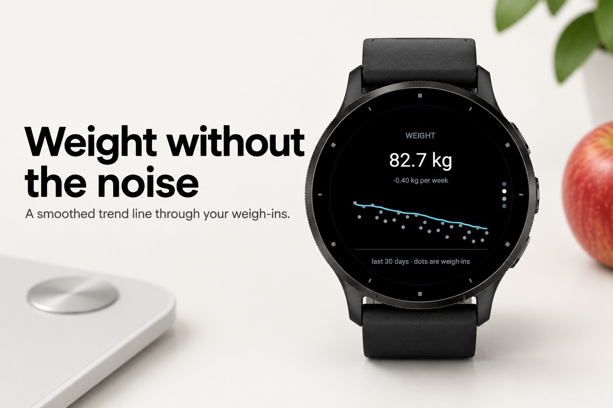
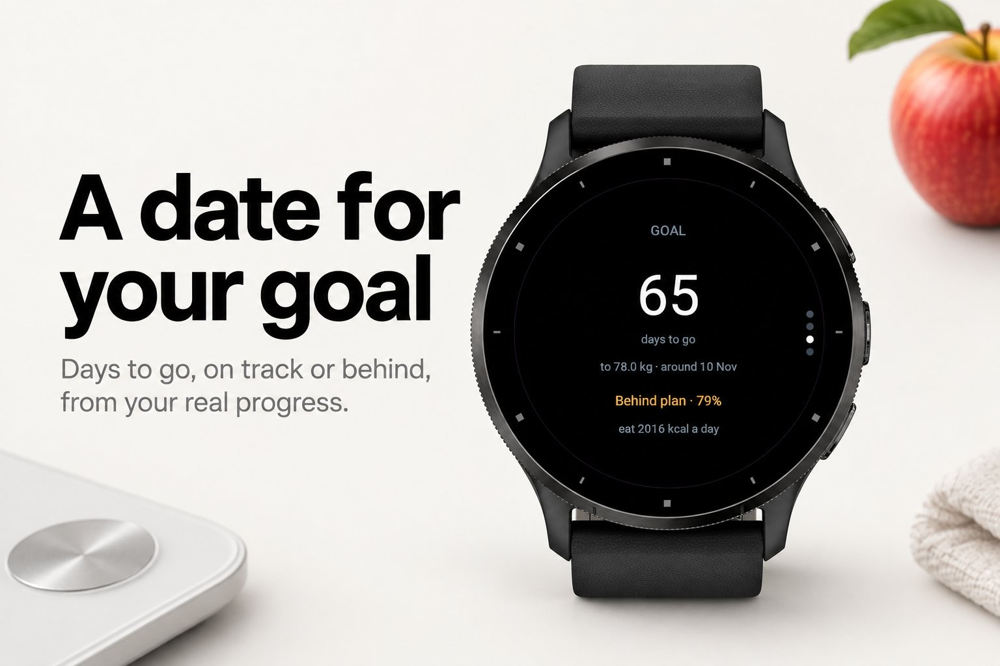
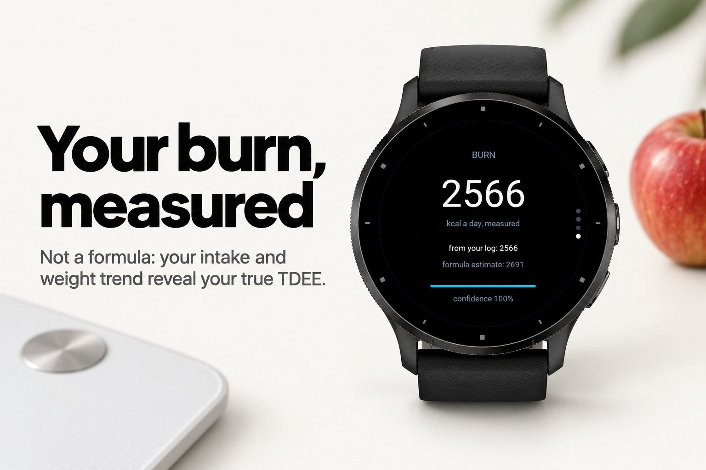
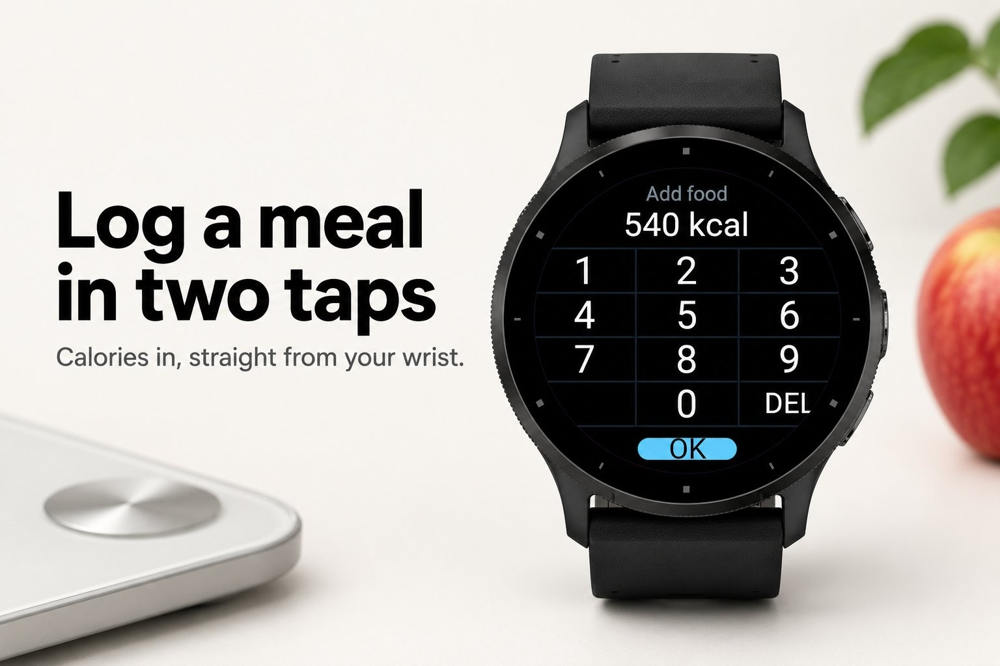

Health & habits · Device app
Calorie target that follows your weight.





Adapt is a calorie target that learns from your scale. Log what you eat and weigh yourself when you can, and Adapt works out what your body actually burns: not a formula, but the number that explains your own weight trend against your own intake. From that it gives you one number that matters today: how much you can still eat.
Most calorie targets are a guess from a formula, and a wrong guess quietly costs you months. Adapt starts with the formula, then replaces it with your measured burn as the log grows. Your weigh-ins are smoothed into a trend line, so water swings and a big dinner do not move the target. Set a goal weight and a rate, and Adapt shows the date you get there, whether you are on track, and how much to eat to stay there.